승강기기사 (2014-09-20 기출문제)
1과목: 승강기 개론
1. 로프식(전기식) 엘리베이터에서 로프와 도르래 사이의 마찰력 등 미끄러짐에 영향을 미치는 요소가 아닌 것은?
- 로프가 감기는 각도
- 권상기 기어의 감속비
- 케이지의 가속도와 감속도
- 케이지측과 균형추쪽의 로프에 걸리는 중량비
(정답률: 77%)

2. 로핑 방법 중 로프에 걸리는 장력이 가장 적은 것은?
- 1:1
- 2:1
- 31
- 4:1
(정답률: 81%)
3. 간접유압식 엘리베이터의 특징이 아닌 것은?
- 부하에 의한 카 바닥의 빠짐이 적다.
- 비상정지장치가 필요하다.
- 실린더를 설치하기 위한 보호관이 필요하지 않다.
- 실린더의 점검이 용이하다.
(정답률: 63%)
4. 엘리베이터를 제어할 때 전동발전기의 계자를 제어하여 권상전동기를 제어하는 방식은?
- 워드레오나드방식
- 정지레오나드방식
- 가변전압가변주파수제어방식
- 교류귀환제어방식
(정답률: 69%)
5. 건물의 높이가 60m 이하인 경우 설계용 수평진도는?
- 지역계수와 설계용 수평진도의 곱이다.
- 지역계수와 설계용 표준진도의 곱이다.
- 설계용 수평지진력과 기기중량의 곱이다.
- 설계용 수직지진력과 기기중량의 곱이다.
(정답률: 63%)
6. 지진 발생 시 엘리베이터의 주로프가 도르래에서 이탈되지 않도록 하기 위한 대책으로 틀린 것은?
- 로프는 도르래의 축 방향에 횡 이동하여야만 한다.
- 홈에 대하여 경사방향으로 로프가 들어가는 후리트 앵글을 작게 하여야 한다.
- 무기어식 권상기에서는 홈의 깊이를 크게 하여야 한다.
- 홈의 피치는 가능한 한 작게 하여야 한다.
(정답률: 44%)
7. 선형 특성을 갖는 에너지 축적형 완충기 설계시 최소행정으로 옳은 것은?
- 완충기의 행정은 정격속도의 115%에 상응하는 중력 정지거리의 2배 이상으로서 최소 65mm이상이어야 한다.
- 완충기의 행정은 정격속도의 125%에 상응하는 중력 정지거리의 2배 이상으로서 최소 65mm이상이어야 한다.
- 완충기의 행정은 정격속도의 125%에 상응하는 중력 정지거리의 4배 이상으로서 최소 65mm이상이어야 한다.
- 완충기의 행정은 정격속도의 125%에 상응하는 중력 정지거리의 4배 이상으로서 최소 85mm이상이어야 한다.
(정답률: 71%)
8. 유량제어밸브상식의 유압식 승강기에서 일반적으로 착상 속도는 정격속도의 몇 % 정도인가?
- 1~5
- 10~20
- 30~40
- 20~60
(정답률: 70%)
9. 사람이 출입할 수 없도록 정격하중이 300kg 이하이고 정격속도가 1m/s 이하인 것은?
- 자동차용엘리베이터
- 에스컬레이터
- 무빙워크
- 덤웨이터
(정답률: 79%)
10. 승강장 도어방식의 종류가 아닌 것은?
- 중앙개폐 방식
- 측면개폐 방식
- 좌우개폐 방식
- 상승개폐 방식
(정답률: 62%)
11. 카 비상정지장치가 작동될 때 부하가 없거나 부하가 균일하게 분포된 카 바닥은 정상적인 위치에서 몇 %를 초과하여 기울어지지 않아야 하는가?
- 2
- 3
- 5
- 6
(정답률: 78%)
12. 전기식 엘리베이터의 경우 브레이크는 카가 정격속도로 정격하중의 몇 %를 싣고 하강방향으로 운행될 때 구동기를 정지시킬 수 있어야 하는가?
- 110
- 125
- 130
- 150
(정답률: 80%)
13. 엘리베이터의 가이드 레일을 설치할 때 레일 브라켓(Rail Bracket)의 간격을 작게 하면 동일한 하중에 대하여 응력도 및 휨도는 어떻게 되겠는가?
- 응력도와 휨도가 모두 작아진다.
- 응력도와 휨도가 모두 커진다.
- 응력도는 커지고 휨도는 작아진다.
- 응력도는 작아지고 휨도는 커진다.
(정답률: 63%)
14. 전기식 엘리베이터의 제동기에서 전자-기계 브레이크 조건으로 옳지 않은 것은?
- 카가 정격속도로 정격하중의 125%를 싣고 하강방향으로 운행될 때 구동기를 정지시킬 수 있어야 한다.
- 드럼 등의 제동 작용에 관여하는 브레이크의 모든 기계적 부품은 2세트로 설치되어야 한다.
- 솔레노이드 플런저는 기계적인 부품으로 간주되지만 솔레노이드 코일은 그렇지 않다.
- 브레이크 라이닝은 반드시 불연성일 필요는 없다.
(정답률: 74%)
15. 구동방식에 의한 엘리베이터의 분류에 속하지 않는 것은?
- 전기식(로프식) 엘리베이터
- 무기어식 엘리베이터
- 유압식 엘리베이터
- 랙ㆍ피니언식 엘리베이터
(정답률: 59%)
16. 전기식 엘리베이터의 기계실 구조로 적합하지 않은 것은?
- 내화구조
- 방화구조
- 준불연재료 이상
- 견고한 목재
(정답률: 77%)
17. 비상용 엘리베이터는 소방관이 조작하여 엘리베이터 문이 닫힌 이후부터 몇 초 이내에 가장 먼 층에 도착하여야 되는가? (단, 운행속도는 1m/s 이상이어야 한다.)
- 10
- 20
- 30
- 60
(정답률: 77%)
18. 교류 2단 속도 제어방식에서 크리프 시간이란 무엇인가?
- 저속 주행 시간
- 고속 주행 시간
- 속도 변환 시간
- 가속 및 감속 시간
(정답률: 74%)
19. 상용압력의 125% 이상의 압력에서 밸브를 열어 탱크에 기름을 되돌려 압력상승을 방지하는 유압회로의 압력 조정 밸브는?
- 스톱 밸브
- 체크 밸브
- 안전 밸브
- 럽처 밸브
(정답률: 64%)
20. 소형 엘리베이터의 정격속도는 몇 m/s 이하여야 하는가?
- 0.15
- 0.25
- 0.35
- 0.45
(정답률: 59%)
2과목: 승강기 설계
21. 승객이 출입하거나 하역하는 동안에 착상의 정확도가 몇 mm 이상 초과될 경우에 착상보정장치를 설치하여야 하는가?
- 5
- 10
- 15
- 20
(정답률: 37%)
22. 엘리베이터 승강로 비상문의 크기는 어느 정도로 하여야 하는가?(관련 규정 개정전 문제로 여기서는 기존 정답인 4번을 누르면 정답 처리됩니다. 자세한 내용은 해설을 참고하세요.)
- 폭 : 0.45m이상, 높이 : 1.2m이상
- 폭 : 0.45m이상, 높이 : 1.8m이상
- 폭 : 0.35m이상, 높이 : 1.2m이상
- 폭 : 0.35m이상, 높이 : 1.8m이상
(정답률: 68%)
23. 카의 자중이 1020kg, 적재하중이 900kg, 정격속도가 60m/min 인 전기식 승강기의 피트 바닥강도는 몇 N이상이어야 하는가?
- 65341
- 75341
- 85243
- 97953
(정답률: 49%)
24. 엘리베이터의 전원설비 및 전기배선에 대한 설명으로 옳지 않은 것은?
- 수전반, 주개폐기는 원칙적으로 기계실 출입문에서 가능한 멀리 설치한다.
- 엘리베이터와 관계없는 전기시설을 기계실에 두어서는 안된다.
- 제어반에 대한 지진대책은 설계시 고려되어야 한다.
- 비상용엘리베이터가 비상용으로 쓰일 때는 다른 엘리베이터의 영향을 받지 않아야 한다.
(정답률: 72%)
25. 조속기의 종류에 해당되지 않는 것은?
- 롤 세프티형
- 디스크형
- 세프티 디바이스형
- 플라이 볼형
(정답률: 67%)
26. 비상용 승강기의 예비전원 사양에 관한 설명으로 옳지 않은 것은?
- 정전 시 60초 이내에 승강기 운행에 필요한 전력용량을 자동적으로 발생시켜야 한다.
- 1시간이상 작동할 수 있어야 한다.
- 전원공급이 다시 안정될 때 엘리베이터가 운행될 수 있어야 한다.
- 타 용도의 급전과 무고나하게 비상용 승강기를 운전시킬 수 있는 용량이어야 한다.
(정답률: 69%)
27. 기어의 장점에 대한 설명으로 가장 옳은 것은?
- 동력전달이 불확실하다.
- 충격을 흡수하는 성질이 있다.
- 호환성이 낮다.
- 높은 정밀도를 얻을 수 있다.
(정답률: 68%)
28. 엘리베이터에 사용하는 T형 24K 가이드 레일 1본의 무게는 약 몇 kg인가?
- 24
- 62
- 80
- 120
(정답률: 62%)
29. 직류 전동기의 전기자 반작용에 의한 현상이 아닌 것은?
- 주자속이 증가한다.
- 발전기에서는 기전력이 저하한다.
- 전기자 중성점이 이동한다.
- 보상권선은 전기자 반작용을 방지한다.
(정답률: 46%)
30. 1200형(디딤판 폭 1m)이고 충고가 4.5m이며, 경사각이 30° 인 에스컬레이터의 디딤판체인 스프로켓(sprocket) 반지름이 462mm, 구동체인 스프로켓 반지름이 540mm, 체인의 보정파단력이 11300kg 일 때 구동체인의 안전율은 약 얼마인가?
- 7.2
- 10.4
- 9.2
- 12.6
(정답률: 22%)
31. 에스컬레이터의 배열 중 설치면적이 적고 쇼핑객의 시야를 트이게 하는 배열방식은?
- 단열승계형
- 단열겹침형
- 복열승계형
- 교차승계형
(정답률: 49%)
32. 공칭속도가 0.5m/s인 무부하상태의 무빙워크 및 수평 또는 하강방향으로 움직이는 제동부하상태의 무빙워크에 대한 정지거리는?
- 0.5m~1.7m
- 0.4m~1.5m
- 0.3m~1.3m
- 0.2m~1m
(정답률: 61%)
33. 엘리베이터용 제어반의 특별 제3종 접지공사에 대한 접지저항은 몇 Ω 이하이어야 하는가?(오류 신고가 접수된 문제입니다. 반드시 정답과 해설을 확인하시기 바랍니다.)
- 5
- 10
- 15
- 20
(정답률: 55%)
34. 엘리베이터 도어머신의 설계에 관하여 옳지 않은 것은?
- 동작회수가 엘리베이터 기동회수의 2배이므로 보수가 용이하여야 한다.
- 주행 중에는 전동기가 토크를 발생시킬 필요가 없다.
- 정전시 구출을 위하여 도어를 손으로 열 수 있어야 한다.
- 도어 행정의 절반까지는 도어를 가속시키고 나머지 절반은 도어를 감속시킨다.
(정답률: 57%)
35. AC 전자브레이크와 DC 전자브레이크를 비교할 때 옳지 않은 것은?
- AC 브레이크는 작동을 원활히 하기 위하여 대시포트를 사용한다.
- DC 브레이크는 코일에 직렬로 다이오드를 접속해서 원활한 작동을 한다.
- AC 브레이크의 자석은 적층 코어이다.
- DC 브레이크는 고형 코어이므로 구조는 간단하다.
(정답률: 42%)
36. 에스컬레이터의 적재하중을 구하는 식은? (단, P : 적재하중[kg], A : 스텝면의 투영면적[m2]이다.)
- P = 170ㆍA
- P = 200ㆍA
- P = 270ㆍA
- P = 300ㆍA
(정답률: 69%)
37. 에스컬레이터의 배열 및 배치에 관한 사항으로 옳지 않은 것은?
- 복열승계형으로 배열하면 애용객의 시야가 가려지지 않는다.
- 건물 출입구 가까이에 엘리베이터와 인접하여 설치하는 것이 좋다.
- 사람의 움직임이 많은 곳에 설치한다.
- 백화점의 경우 엘리베이터 및 에스컬레이터의 이용자수는 입점자수의 80~90%로 한다.
(정답률: 66%)
38. 도어에 관련된 부품 및 장치에 대한 설명으로 옳지 않은 것은?
- 도어 클로저는 도어 머신의 구동장치이다.
- 도어 인터록은 승강장 도어의 열림을 방지한다.
- 도어 행거는 승강장 도어가 도어가이드 레일에서 이탈하는 것을 방지한다.
- 승강장문 잠금장치의 도어잠금부품이 7mm 이사아 물리기 전에는 카가 출발되지 않아야 한다.
(정답률: 60%)
39. 전기식 엘리베이터에서 미끄러짐을 결정하는 요소가 아닌 것은?
- 권부각
- 카의 가속도와 감속도
- 권상기 도르래 홈의 형상
- 전동기의 용량
(정답률: 69%)
40. 전기식 엘리베이터에서 피트 바닥은 전부하 상태의 카가 완충기에 작용하였을 때 완충기 지지대 아래에 부과되는 정하중의 몇 배를 지지할 수 잇어야 하는가?
- 1
- 2
- 3
- 4
(정답률: 57%)
3과목: 일반기계공학
41. 그림과 같이 용접이음을 하였을 때 굽힙응력의 계산식으로 가장 적합한 것은? (단, L은 용접길이, t는 용접치수(용접판 두께), ℓ은 용접부에서 하중 작용선까지 거리, W는 작용하중이다.)
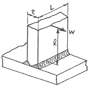
- 6Wℓ/tL
- 12Wℓ/tL
- 6Wℓ/t2L
- 12Wℓ/t2L
(정답률: 61%)
42. 연삭숫돌의 결함과 수정에 관한 용어 중 숫돌입자의 표면이나 기공에 칩(chip)이 차 있는 상태를 의미하는 것은?
- 로딩(loading)
- 트루잉(truing)
- 글레이징(glazing)
- 드레싱(dressing)
(정답률: 54%)
43. 그림과 같은 1단 고정, 1단 지지의 외팔보가 길이 ℓ에 걸쳐 균일분포 하중(ω)을 받을 때 B 지점의 반력은 얼마인가?
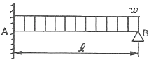
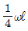
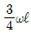
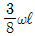
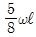
(정답률: 66%)
44. 구리와 30~40%의 납을 합금한 것으로 열전도가 양호하고, 마찰계수가 작아 고속 회전부의 베어링으로 쓰이는 것은?
- 켈밋(Kelmet)
- 포금(Gun metal)
- 알루미늄 청동
- 콜슨(Colson) 합금
(정답률: 64%)
45. 하물(荷物)을 들어 올리거나 내릴 때에 하물 자중에 의한 제동작용을 이용하는 자동 하중 브레이크는?
- 웜 브레이크
- 원추 브레이크
- 원판 브레이크
- 블록 브레이크
(정답률: 56%)
46. 나사 측정에서 삼침법이란 기본적으로 나사의 무엇을 측정하는 방법인가?
- 피치
- 외경
- 골지름
- 유효지름
(정답률: 52%)
47. 공기압 회로에서 다수의 에어 실린더나 액추에이터를 사용할 때, 각 작동순서를 미리 정해두고 그 순서에 따라 움직이고 싶은 경우 사용하는 밸브로 가장 적합한 것은?
- 공기 벤트
- 언로딩 밸브
- 공기 리베터
- 시퀀스 밸브
(정답률: 71%)
48. 미끄럼 키와 같이 토크를 전달하는 동시에 축 방향의 이동도 할 수 있고, 토크를 수 개의 키로서 분담할 수 있어 자동차, 항공기 터빈 등의 속도 변환하는 축에 많이 사용되는 기계요소는?
- 핀
- 코터
- 성크 키
- 스플라인
(정답률: 61%)
49. 다음 체결용 기계요소 중 조립된 보스(boss)를 축방향으로 이동시킬 수 없는 것은?
- 원뿔 키
- 삼각형 세레이션
- 슬라이딩 키
- 인벌류우트 스플라인
(정답률: 50%)
50. 응력의 종류를 수직응력, 접선응력, 조합응력으로 분류할 때 수직응력에 해당하는 것은?
- 전단응력
- 압축응력
- 굽힘응력
- 비틀림응력
(정답률: 54%)
51. 기초원지름 270mm, 잇수 54인 스퍼어 기어의 원주 피치는 약 얼마인가?
- 15.17mm
- 15.45mm
- 15.54mm
- 15.71mm
(정답률: 50%)
52. 소재 또는 공구를 양쪽 혹은 한쪽만 회전시켜 공구 표면 형상과 동일한 형상을 소재에 각인하는 가공법은?
- 압연가공
- 전조가공
- 절단가공
- 프레스가공
(정답률: 59%)
53. 유체의 흐름을 급격히 막으면 급격한 압력상승으로 나타나 이것이 압력파로 되어 유체 속으로 전파되는 현상은?(오류 신고가 접수된 문제입니다. 반드시 정답과 해설을 확인하시기 바랍니다.)
- 서징(surging)
- 채터링(chattering)
- 베이퍼록(vapor lock)
- 캐비테이션(cavitation)
(정답률: 59%)
54. 구름 베어링에 비교한 미끄럼 베어링의 장점인 것은?
- 충격하중에 강하고 설치가 쉽다.
- 일반적으로 기동마찰저항이 작다.
- 마찰계수의 변화가 작고 동력손실이 작다.
- 국제규격이 표준화 되어 있고 윤활방법이 편리하다.
(정답률: 44%)
55. 단동 왕복펌프의 피스톤 지름이 20cm, 행정 30cm, 피스톤의 매분 왕복횟수가 80cm, 체적효율 92%일 때 펌프의 양수량은 약 몇 m3/min인가?
- 0.35
- 0.69
- 0.82
- 1.42
(정답률: 41%)
56. 열간 및 냉간 가공 후의 불균질한 조직과 결정 입자를 조정하기 위하여 A3 변태점 이상 가열 후 대기 중에서 공냉하여 균질하게 하는 열처리 방법은?
- 뜨임
- 담금질
- 불림
- 오스템퍼
(정답률: 43%)
57. 다음 중 주물제품에서 크랙의 원인으로 가장 거리가 먼 것은?
- 주물을 급랭시킬 때
- 쇳물 아궁이가 매우 작을 때
- 만나는 부분의 살 두께의 차이가 너무 클 때
- 구석이나 만나는 부분이 모지게 되어 있을 때
(정답률: 62%)
58. 비틀림 모멘트를 받는 원형 단면축에 발생되는 최대전단응력에 관한 설명으로 옳은 것은?
- 축 지름이 증가하면 감소한다.
- 극단면계수가 감소하면 감소한다.
- 가해지는 토크가 증가하면 감소한다.
- 단면의 극관성 모멘트가 증가하면 증가한다.
(정답률: 39%)
59. 다음 중 사용재료의 최대응력과 항복응력 및 허용응력을 적용하여 일반적인 안전율을 나타내는 식으로 가장 적합한 것은?
- 허용응력/항복응력
- 최대응력/항복응력
- 항복응력/허용응력
- 항복응력/최대응력
(정답률: 63%)
60. 탄소함유량의 0.2~0.3% 탄소강을 급냉(수냉)하였을 때 실온에서의 조직으로 경도와 인장강도가 가장 큰 것은?
- 펄라이트
- 베이나이트
- 솔바이트
- 마텐자이트
(정답률: 57%)
4과목: 전기제어공학
61. 대칭 3상 교류에서 각 상간의 위상차는 몇 rad인가?
- π/2
- π/3
- π/6
- 2π/3
(정답률: 55%)
62. 농형 유도전동기의 기동방법 중 보통 10~15kW 정도 용량의 전동기에 사용하는 방법으로 기동전류가 전전압 기동전류의 1/3로 감소될 수 있는 기동법은?
- 전전압 기동법
- Y-△ 기동법
- 기동보상기에 의한 기동법
- 리액터 기동법
(정답률: 58%)
63. 10V의 전압을 인가할 때 3A의 전류가 흐르는 부하에 25V의 전압을 가하면 몇 A의 전류가 흐르는가?
- 0.75
- 1.5
- 3.0
- 7.5
(정답률: 54%)
64. 기계장치, 프로세스 및 시스템 등에서 제어되는 전체 또는 부분으로서 제어량을 발생시키는 장치는?
- 제어장치
- 제어대상
- 조작장치
- 검출장치
(정답률: 46%)
65. 피드백 제어계에서 전압, 전류, 주파수, 회전속도 등 전기적 및 기계적 양을 주로 제어하는 것으로서 응답속도가 대단히 빠른 것을 특징으로 하는 것은?
- 서보기구
- 프로세스제어
- 자동조정
- 프로그램제어
(정답률: 50%)
66. 내부임피던스 Zg = A+jB[Ω]의 임피던스 선로를 연결하여 부하에 전력을 공급하려고 한다. 부하임피던스 Zo[Ω]가 어떤 값이 될 때 최대전력이 전송되는가?
- (A+C)+j(B+D)
- (A+C)-j(B+D)
- (A+B)+j(C+D)
- (A+B)-j(C+D)
(정답률: 44%)
67. 정전용량이 같은 2개의 콘덴서를 병렬로 연결했을 때의 합성 정전용량은 직렬로 했을 때의 합성 정전용량의 몇 배인가?
- 1/2
- 2
- 4
- 8
(정답률: 51%)
68. 그림과 같은 논리회로의 출력은?
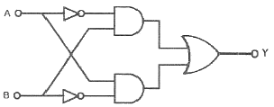
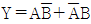
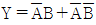
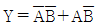
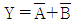
(정답률: 53%)
69. 다음 중 일반적으로 중저항의 범위에 해당되는 것은?
- 500[Ω]~100[MΩ]의 저항
- 100[Ω]~100[MΩ]의 저항
- 1[Ω]~10[MΩ]의 저항
- 1[Ω]~1[MΩ]의 저항
(정답률: 38%)
70. 입력조건 A와 B가 동시에 주어질 때 출력이 생성되는 논리회로는?
- AND 회로
- OR 회로
- NOR 회로
- NOT 회로
(정답률: 59%)
71. 그림과 같이 주어진 제어회로의 전달함수 C/R 는?
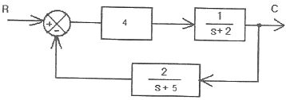
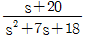
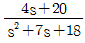
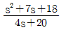
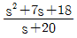
(정답률: 47%)
72. 빛의 양(조도)에 의해서 동작되는 CdS를 이용한 센서에 해당하는 것은?
- 인덕턴스 변화형
- 저항 변화형
- 용량 변화형
- 전압 변화형
(정답률: 50%)
73. 다음의 정류방식에서 맥동률이 가장 큰 방식은?
- 3상 전파
- 3상 반파
- 단상 전파
- 단상 반파
(정답률: 46%)
74. 분류기 저항 대한 설명 중 옳은 것은?
- 전압계와 직렬로 접속한다.
- 전류계와 직렬로 접속한다.
- 전류계와 병렬로 접속한다.
- 전압의 측정 범위를 확대하기 위한 것이다.
(정답률: 47%)
75. 피드백(Feedback) 제어에서 반드시 필요한 장치는?
- 안정도를 좋게 하는 장치
- 구동장치
- 응답속도를 빠르게 하는 장치
- 입력과 출력을 비교하는 장치
(정답률: 60%)
76. 그림과 같은 회로에서 5Ω에 흐르는 전류는 몇 A인가? (단, 그림에서의 저항 단위는 모두 Ω이다.)
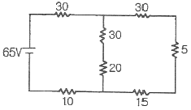
- 0.5
- 1.5
- 2.0
- 2.5
(정답률: 28%)
77. 유도전동기에서 슬립이 “0”이라고 하는 것은?
- 유도전동기가 제동기의 역할을 한다는 것이다.
- 유도전동기가 정지 상태인 것을 나타낸다.
- 유도전동기가 전부하 상태인 것을 나타낸다.
- 유도전동기가 동기속도로 회전한다는 것이다.
(정답률: 54%)
78. 그림과 같은 브리지 정류회로는 어느 점에 교류입력을 연결하여야 하는가?
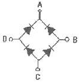
- A-B점
- A-C점
- B-C점
- B-D점
(정답률: 57%)
79. 그림(a)의 직렬로 연결된 저항회로에서 입력전압 V1과 출력전압 Vo의 관계를 그림(b)의 신호흐름선도로 나타낼 때 A에 들어갈 전달함수는?
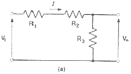
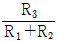
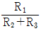
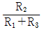
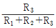
(정답률: 53%)
80. 그림과 같은 계통에서 정상상태 편차(eSS)는?
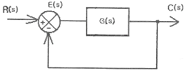
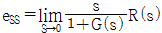
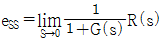
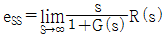
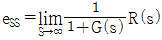
(정답률: 33%)